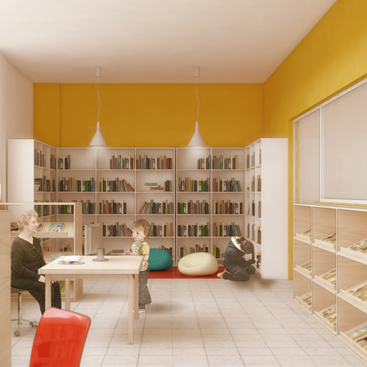
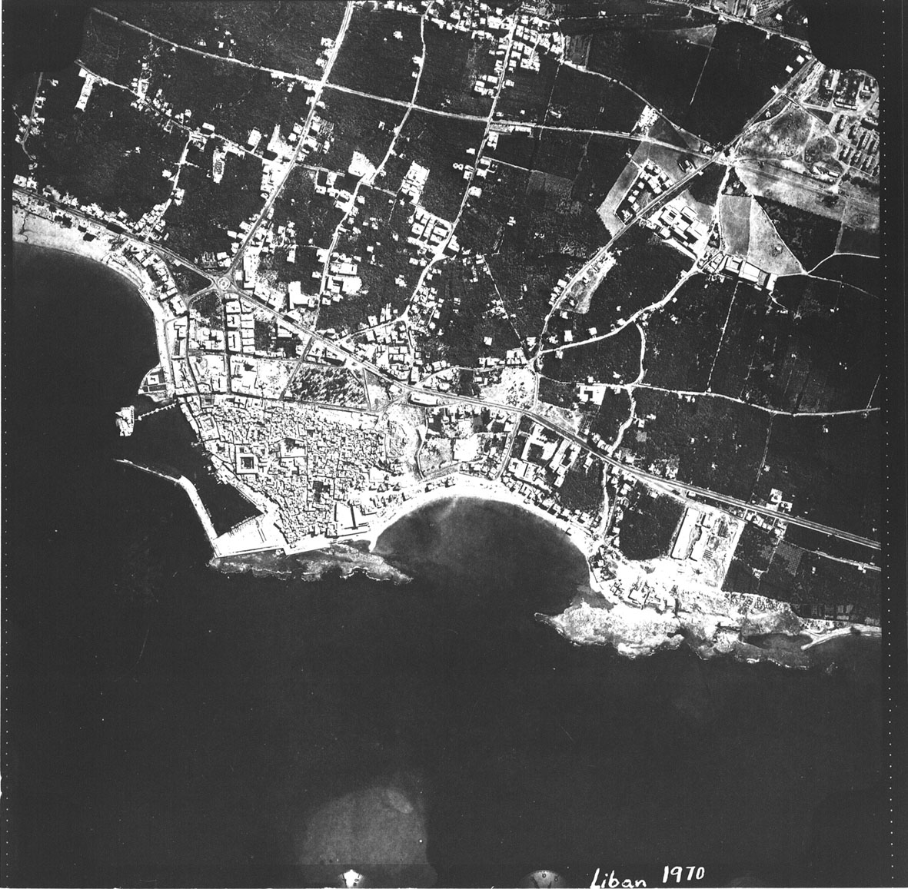
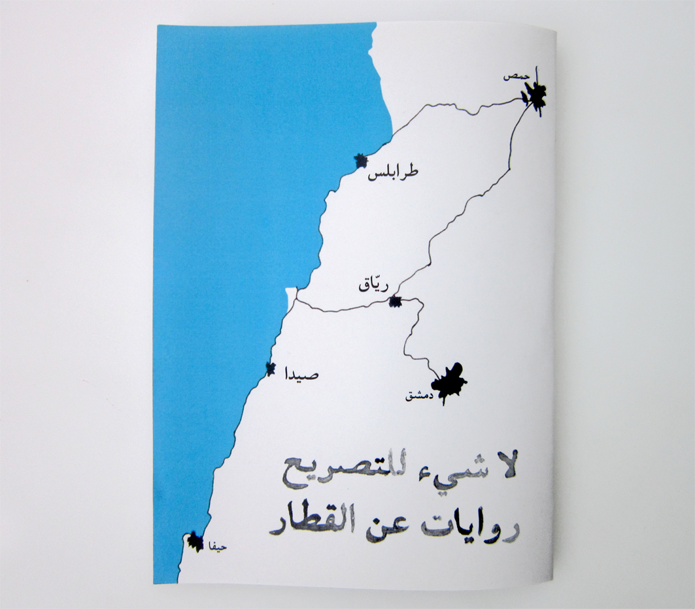
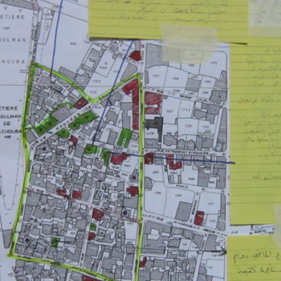

-

تصميم الأماكن
نحن ننظر الى انتاج المساحة والبناء كعملية اجتماعية نطمح من خلالها الى انتاج أماكن ومبانٍ مستدامةٍ ودامجة، كما في عملنا السابق على تصميم مكتباتٍ عامة عدّةٍ في المخيمات الفلسطينية، واعادة تأهيل متحفٍ للذاكرة في مخيم شاتيلا. بشكل مماثل نقارِب تصوّر وتصميم الهويات الخاصة بالأماكن الناشئة، بحيث عملنا أيضاً على خلق هويات بصريةٍ لكلّ من "المؤسسة العربية لمسارح الدمى والعرائس" واستوديو «دَمْج».
-

الحملات الإعلامية
اطلاق حملةٍ هو فعلٌ سياسي. فكلّ ما نبتكر من الصور، والمشاهد، والسرديات، والمعاني، والرسائل، يأتي مدعّماً بمنظورٍ نقدي لعلاقات القوة. ويمكن لعملنا أن يمتدّ ليشمل بناء الائتلافات وتأمين التغطية الاعلامية. وحتى اليوم، شاركنا في حملاتٍ متنوعةٍ على مستوياتٍ مختلفةٍ مع لجنة أهالي المفقودين واتحاد المقعدين ومنظمة انترناشونال ألرت.
-

التوجيهات المدينية
للتدخل في المكان تبعات اجتماعيةٍ واقتصاديةٍ وسياسيةٍ عدّة. ومع يقيننا بأنه لا يمكن للتخطيط المديني "خلق" العلاقات الاجتماعية، الا أن بامكانه تمهيد الطريق، وتقييم التجارب الماضية، واستقاء دروسٍ من الفشل، وانجاب الممكن. بهذه الذهنية، قارَبنا في السابق الواجهة البحرية لرأس بيروت، والمنطقة الصناعية في مزيارة في شمال لبنان.
-

المنشورات
نحن نولي الأهمية لدور المنشورات في بناء السرديات وتوجيه المحتوى من منظورٍ نقدي. فهي عمليةٌ ندرك من خلالها فحوى المواد، ونتولّى الدور الرئيس في صياغته. وسواء جاء العمل بمبادرةٍ ذاتيةٍ منا أو بتكليفٍ من جهةٍ ما، فان تصميم المنشورات يتضمّن التساؤل، والانتاج، والطباعة والتوزيع.
-

البحث ورسم الخرائط
رسم الخرائط هو وسيلةٌ بحثيةٌ يمكنها توفير قراءاتٍ متعدّدة المستويات لمجموعةٍ معقّدةٍ من المعلومات. حتى الآن، تضمّن عملنا اجراء البحوث، وجمع المعلومات، واستخدام رسم الخرائط في تحليل الاجراءات الأمنية في بيروت، والممارسات التاريخية في المساحة العامة فيها، وكذلك لملاعب كرة القدم الشعبية في بيروت.
-

البحث والأفلام
يمثّل الفيديو والرسوم المتحركة وسائل بحثٍ بنّاءة، وكذلك منصّاتٍ ذات شعبيةٍ لإشراك جماهير واسعة. ومن خلال التعاون مع المخرج ماهر أبي سمرا في عمله على فيلمٍ عن عاملات المنازل، قمنا بتحرّي غرفة العاملة، كما طوّرنا خريطةً لنظام الكفالة المعتمَد في لبنان. ومن جهةٍ أخرى، تعاونّا مع المخرجة جمعة حمدو لبناء سرديةٍ بديلةٍ عن حي زقاق البلاط، من منظور المجتمع الذي يعيش في ظلّ قانون الايجارات القديم.
-

البحث والكتابة
تهيمن اللغةُ الأجنبية على الخطاب النقدي الخاص بالقضايا الآنية الهامة في مدننا وبيئاتنا، سواء على شكل منشوراتٍ صحافية، أو كتب، أو نقاشات، أو محاضرات، أو ندوات. لهذا، نهدف الى المساهمة في انتاج كتاباتٍ عن المدينة والصراعات المدينية باللغة العربية؛ وتشكّل سلسلة "الحق في المدينة" في مجلة "بدايات" احدى هذه المساهمات.
-

ورش العمل
ان اشراك الشباب في التفكير في مسقبل المدينة هو أمرٌ بالغ الأهمية في عملية التغيير المديني. من هذا المنطلق، نظّمنا ورش عملٍ تدريبيةٍ أتاحت للشباب اختبار مزيجٍ من العمل الميداني، والتدريب في الأستوديو على البحث المتعلق بالمساحة. وهدف هذا النشاط الى ابراز السردية المتجذّرة تاريخياً عن الأحياء التي باتت محجوبةً بفعل هيمنة النماذج المنقادة لسياسات السوق.
-

النشاطات
من خلال نشر نِتاجنا كمجموعة، نسعى الى تحقيق هدفَين: أولاً، التفكّر في عملنا بغرض تطويره، وثانياً، تحفيز الأفكار والرؤى الجديدة. لهذا، انخرطنا (كأفرادٍ) في تنظيم المؤتمرات والحوارات، مثل مؤتمر ضبط الإيجارات في الجامعة الأميركية في بيروت، والندوات الجامعية بشأن قضية دالية الروشة. كذلك نهدف الى انتاج المزيد من النشاطات، لتغدو منصّاتٍ تستضيف نقاشاتٍ معمّقة.
-
الانخراط الفاعل في القضايا المدينية
ينبع انخراطنا في القضايا المدينية من يقيننا بوجود حاجةٍ ماسةٍ الى فهمٍ ومشاركةٍ عامةٍ واسعةٍ في عمليات انتاج المكان والبيئة العمرانية في لبنان. وقد لعبنا كأفرادٍ أدواراً فاعلةً في تحركاتٍ عدّةٍ مثل قضية استعادة الدالية ولجنة المستأجرين/ات القدامى، وساهمنا في البحث، وصياغة الحملات والبيانات، وصناعة البصريات، وتنظيم النشاطات. ونحن نرى في هذه الأنشطة عاملاً أساسياً في تشكيل مفهوم العدالة والحق في المدينة.